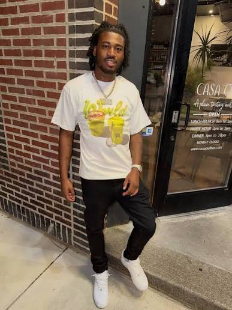
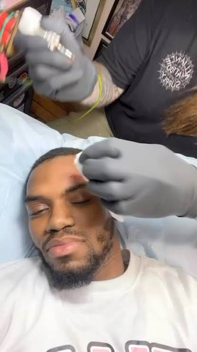

Yung Kash Capre and Dohtty Address Viral Philadelphia Altercation
Entertainment | Social Media
Published: Tuesday, August 18, 2026

A confrontation involving Philadelphia rapper Yung Kash Capre and Philadelphia artist and content creator Dohtty has taken over social media after video of the brief altercation began circulating online.
Clips shared across social media, including footage reposted by Philly Scoophall’s Instagram account, appear to show the encounter lasting only a few seconds before Dohtty was knocked to the ground.
The incident has since sparked discussion among Philadelphia’s entertainment and social media communities, with both men offering different explanations for what led to the confrontation.
Kash Says Disrespect Led to the Fight

Yung Kash Capre has pushed back against what he describes as an inaccurate version of events.
In a background statement addressing the incident, Kash alleged that people around him heard Dohtty making disrespectful comments about him. According to Kash’s account, the situation escalated after Dohtty was allegedly “talking crazy” and disrespecting him.
Kash’s version suggests that the physical confrontation was the result of tensions that had already developed between the two sides.
The rapper has also appeared focused on challenging the narrative being presented online, where short video clips have largely driven public reaction to the incident.
Dohtty Offers a Different Account

Dohtty later responded publicly with his own explanation, presenting a much different picture of the relationship between the two men.
According to Dohtty, he and Kash had previously considered each other close, describing their relationship as being similar to brothers. He also said he had supported Kash through difficult periods in the past, making the confrontation particularly disappointing to him.
Dohtty also discussed the physical consequences of the incident. He said he suffered an injury that required medical glue to close a wound on his head.
Rather than viewing the encounter as a simple street dispute, Dohtty expressed frustration that a personal disagreement escalated into violence and ultimately became content circulating throughout social media.
Social Media Turns the Incident Into a Viral Moment
As with many Philadelphia street incidents captured on camera, the short clip quickly became the center of the conversation.
However, the footage circulating online does not necessarily provide the complete context surrounding what happened before the confrontation. The competing statements from Kash and Dohtty have added another layer to the story, with each person presenting a different explanation for how the situation developed.
Neither side’s account independently establishes every detail of what occurred before the video began.
For now, the incident remains a heavily discussed topic across Philadelphia’s online entertainment scene, while both artists have made their positions known.
The situation also highlights how quickly private disputes can become public spectacles when videos are recorded, reposted and circulated across social media.